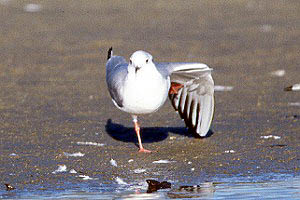
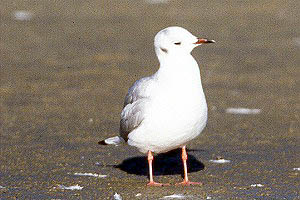

| These photographs accompany records that have been recently
submitted to the committee. This record has been ACCEPTED.  Black-headed Gull Larus ridibundus 31 Jan 97, Santa Barbara, SBA 1997-015 © 1997 Ronald M. Saldino  Black-headed Gull Larus ridibundus 31 Jan 97, Santa Barbara, SBA 1997-015 © 1997 Ronald M. Saldino |